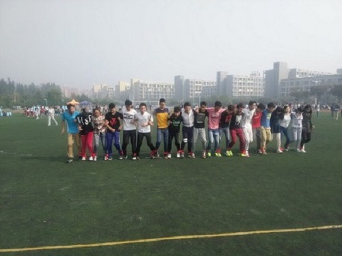

李珂的书单 皮皮鲁系列 Head First Java 文学少女 白夜行 百年孤独 读大学，究竟读 影响力 色彩心理学 什么 菊与刀 肖声克的救赎 欧亨利小说选集 大学风景 镜湖 教三旁的镜湖，清澈的水面倒映出周边的美景，这里虽不是江南，但却有不输给江南的美景：镜湖加杨柳。每当我要拍摄视频时，第一个考虑的地方便是这里。 前往图书馆的路上 清明时节雨纷纷，任然挡不住矿大学生去图书馆的脚步。  三运足球场 大学的景色自然不只是background
 镜湖
镜湖